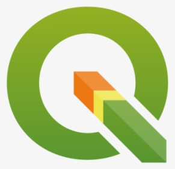

Technologies
Tools and technologies I work with:
| Technology | Usage | Icon |
|---|---|---|
| GNSS | Field surveying, VADASE / PPPH-VA experiments, RTK |  |
| Python | Data processing, scripting, automation |  |
| NetCAD | Cadastral drawings and local mapping |  |
| MicroStation | CAD workflows | |
| ArcGIS | Desktop GIS analysis, cartography |  |
| QGIS | Open-source GIS work |  |